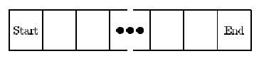

Alexander Charles McMillan loves to gamble, and during his last trip to the casino he ran across a new game. It is played on a linear sequence of squares as shown below.

A chip is initially placed on the Start square. The player then tries to move the chip to the End square through a series of turns, at which point the game ends. In each turn a coin is flipped: if the coin is heads the chip is moved one square to the right and if the coin is tails the chip is moved two squares to the right (unless the chip is one square away from the End square, in which case it just moves to the End square). At that point, any instruction on the square the coin lands on must be followed. Each instruction is one of the following:
1. Move right n squares (where n is some positive integer)
2. Move left n squares (where n is some positive integer)
3. Lose a turn
4. No instruction
After following the instruction, the turn ends and a new one begins. Note that the chip only follows the instruction on the square it lands on after the coin ip. If, for example, the chip lands on a square that instructs it to move 3 spaces to the left, the move is made, but the instruction on the resulting square is ignored and the turn ends. Gambling for this game proceeds as follows: given a board layout and an integer T, you must wager whether or not you think the game will end within T turns.
After losing his shirt and several other articles of clothing, Alexander has decided he needs professional help-not in beating his gambling addiction, but in writing a program to help decide how to bet in this game.
Input will consist of multiple problem instances. The first line will consist of an integer n indicating the number of problem instances. Each instance will consist of two lines: the rst will contain two integers m and T (1 <= m <= 50, 1 <= T <= 40), where m is the size of the board excluding the Start and End squares, and T is the target number of turns. The next line will contain instructions for each of the m interior squares on the board. Instructions for the squares will be separated by a single space, and a square instruction will be one of the following: +n, -n, L or 0 (the digit zero). The first indicates a right move of n squares, the second a left move of n squares, the third a lose-a-turn square, and the fourth indicates no instruction for the square. No right or left move will ever move you off the board.
Output for each problem instance will consist of one line, either
Bet for. x.xxxx
if you think that there is a greater than 50% chance that the game will end in T or fewer turns, or
Bet against. x.xxxx
if you think there is a less than 50% chance that the game will end in T or fewer turns, or
Push. 0.5000
otherwise, where x.xxxx is the probability of the game ending in T or fewer turns rounded to 4 decimal places. (Note that due to rounding the calculated probability for display, a probability of 0.5000 may appear after the Bet for. or Bet against. message.)
5 4 4 0 0 0 0 3 3 0 -1 L 3 4 0 -1 L 3 5 0 -1 L 10 20 +1 0 0 -1 L L 0 +3 -7 0
Bet for. 0.9375 Bet against. 0.0000 Push. 0.5000 Bet for. 0.7500 Bet for. 0.8954